PATEK PHILIPPE NAUTILUS
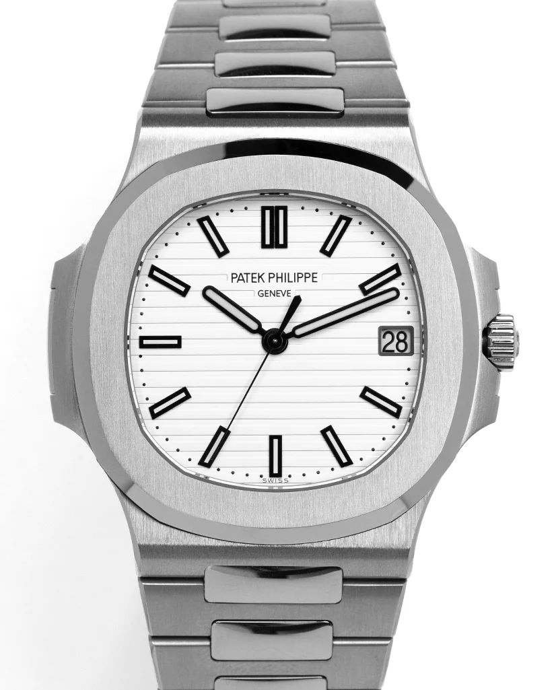
There are few watches that might be considered perfect and one of those is the Patek
Philippe Nautilus. Since the 1970’s the Nautilus has captured the watch communities attention with
its design and superior quality. Manufactured almost entirely by hand, each Patek Philippe Nautilus
can be
considered one of a kind but what they all share is the master craftsmanship that goes into
producing a
Patek. With the rounded octagonal shape of its bezel, the ingenious porthole construction of its
case, and its horizontally embossed dial, the Nautilus has epitomized the elegant sports watch since
1976. Forty years later, it comprises a splendid collection of models for men and women. In steel,
rose gold, white gold or two-tone combinations they accompany the most active lifestyles with
incomparable class
Price: 99,500$
Buy nowPATEK PHILIPPE WORLD
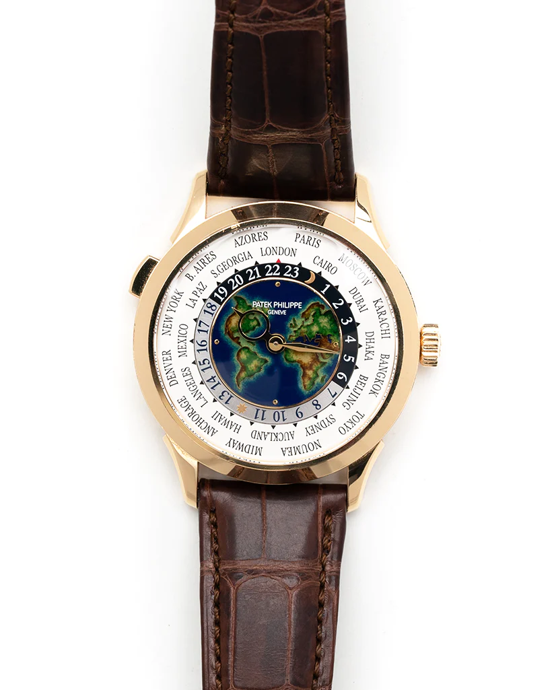
Since Louis Cottier’s invention of this mechanism during the 1930s, the famous
Patek
Philippe World Time watches have often been adorned with maps in Grand Feu cloisonné enamel
depicting various regions of the world. In 2022, Patek Philippe pays tribute to the dynamism of
South-East Asia and to Oceania by interpreting this model in a new white gold version with a Grand
Feu cloisonné enamel dial. To combine geography and poetry, the artisan first marks off the outlines
of the continents with a thin gold wire. He then fills the compartments with various enamel colors
reproducing the oceans and land masses, while repeatedly firing the enameled dial plate at high
temperature in a kiln. Patek Philippe Complications World Time (5231J001) self -
winding automatic watch, features a 38.5mm 18k yellow gold case.
Price: 125,500$
Buy nowIWC PORTUGIESER
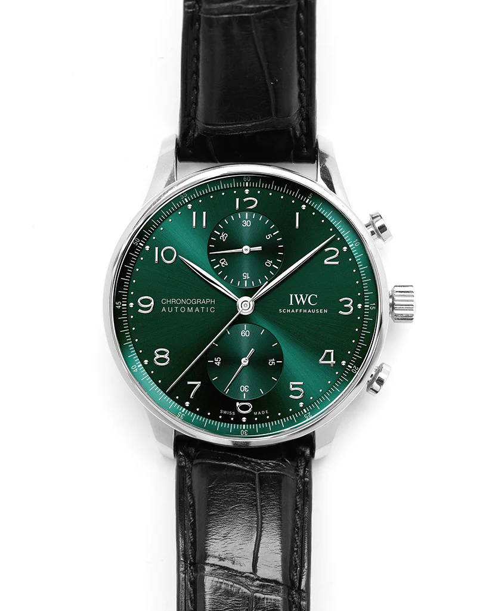
The harmoniously designed chronograph with its peripheral precision scale and
recessed
totalizers has been the most coveted member of the Portugieser family since 1998. The
Portugieser
Chronograph is one of IWC Schaffhausen’s most iconic models. With its compact diameter of 41
millimetres, it fits almost any wrist. However, the thin bezel gives one the impression of
wearing a
significantly larger watch. Stainless steel
case Diameter 41.0 mmHeight 13.0 mmSee-through sapphire glass
back Chronograph function with minutes and seconds Sapphire glass, convex, anti reflective coating
on both sides, Small hacking seconds. This model features a stainless steel case, a
green dial, as well as rhodium-plated hands and appliqués; it is fitted with a black alligator
leather strap.
Price: 8,200$
Buy nowBREITLING SUPEROCEAN
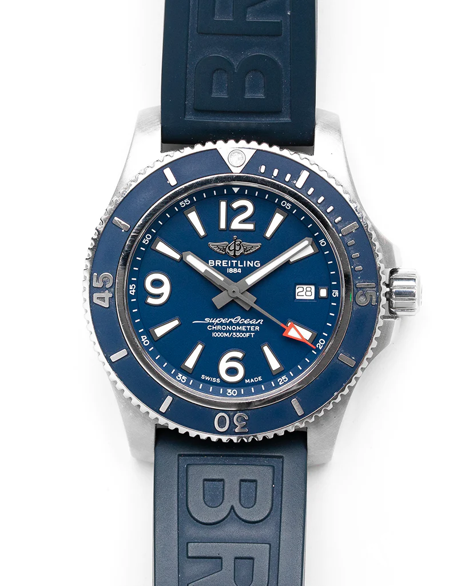
Stainless steel case with a blue (Diver Pro III) rubber strap. Uni-directional
rotating stainless steel bezel with a blue ring. Blue dial with luminous grey hands and
index hour
markers.
Arabic numerals mark the 6, 9 and 12 o'clock positions. Minute markers around the outer rim.
Dial
Type: Analog. Luminescent hands and markers. Date display at the 3 o'clock position.
Breitling
caliber 17
automatic movement with a 38-hour power reserve. Scratch resistant sapphire crystal. Case size: 44
mm.Case thickness: 14.2 mm. Band width: 22/20 mm.Tang clasp. Water resistant at 1000 meters / 3300
feet. Functions: date, hour, minute, second. Luxury
watch style. Sporty, colorful and bold, the Superocean Automatic 46 is designed for daring men
looking for
a sports watch. On the beautiful blue band you can see Breitling. Click the button to place your
order now.
Price: 4,000$
Buy nowAP ROYAL OAK
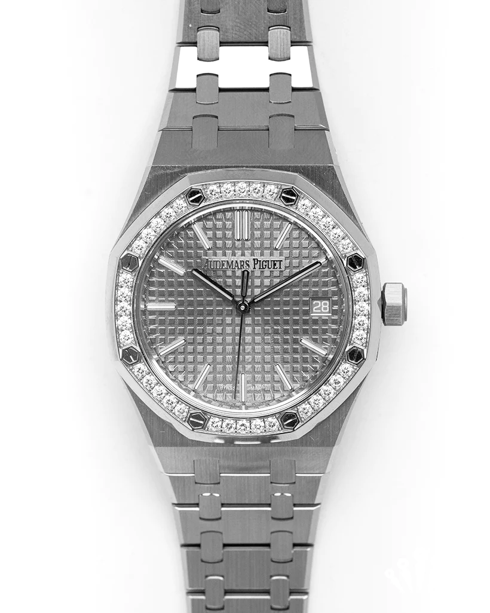
This tone-on-tone 41 mm model marries stainless steel with a diamond-set
bezel, a grey
“Grande Tapisserie” dial and a matching "50-years" oscillating weight visible through the
caseback.
It encompasses the new Royal Oak design evolution as well as the new selfwinding Calibre
5900. The
bezel paved with baguette-cut diamonds enriches the monochromatic aesthetic of this 41 mm 18-carat
white gold Royal Oak Selfwinding Flying Tourbillon. 18-carat white gold case, bezel set with
baguette-cut diamonds, glareproofed sapphire crystal and caseback. This
beautiful Ap can be yours cick the buy button.
Price: 63,200$
Buy nowVACHERON CONSTANTIN
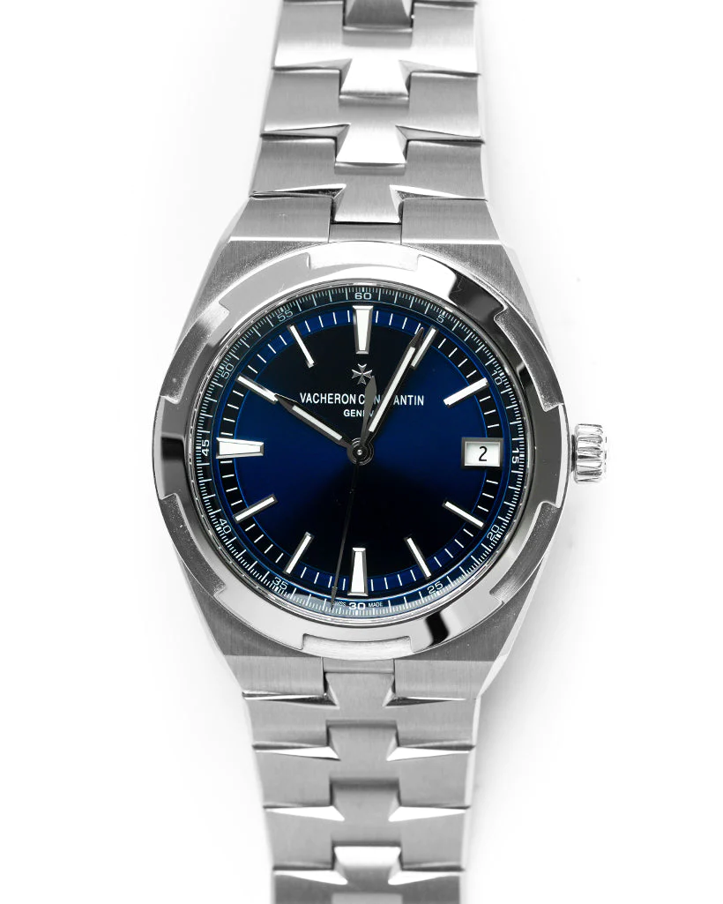
The Vacheron Constantin Ref. 4500V/110A-B128. This watch comes as a Full
Set, with the
Original Box & Papers. This watch features a 41mm Stainless Steel Case and comes on a
Stainless
Steel Bracelet. The piece
features an amazing Blue Dial with a Date Window at the 3. The Maltese cross, a Vacheron Constantin
icon, is subtly depicted in the design of the bezel and the steel bracelet. Thanks to its clasp and
system of three easily interchangeable straps – steel, leather, and rubber – the watch can be
personalized according to the owner’s wishes. This dial is available in many colors let one of our
reps know your choice.
Price: 32,500$
Buy nowROLEX SUBMARINER
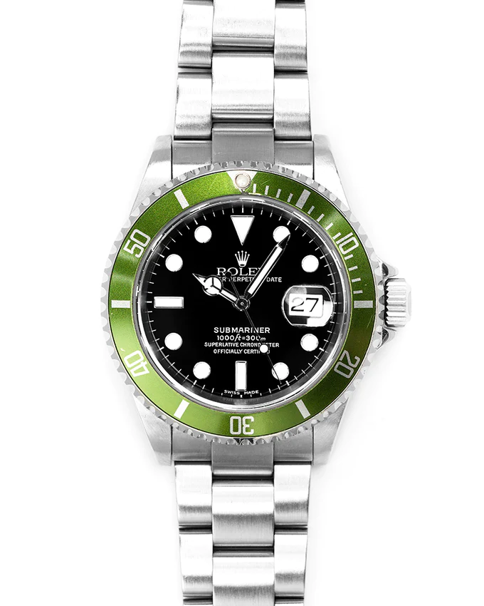
We are proud to present to you this very rare 50th Anniversary
Submariner Date
'Kermit' This is certainly not your average 16610LV, This is one of the first ones
Rolex has ever
produced and as you may know, the first versions are always the most valuable and collectible
versions. Launched in 1953, the Submariner was the first divers’ wristwatch waterproof to a depth of
100 metres (330 feet). This was the second great breakthrough in the technical mastery of
waterproofness, following the invention of the Oyster, the world’s first waterproof wristwatch, in
1926, Perfect for anyone. This beautiful Rolex can be yours cick the buy button.
Price: 25,000$
Buy nowRICHARD MILLE RM 11-02
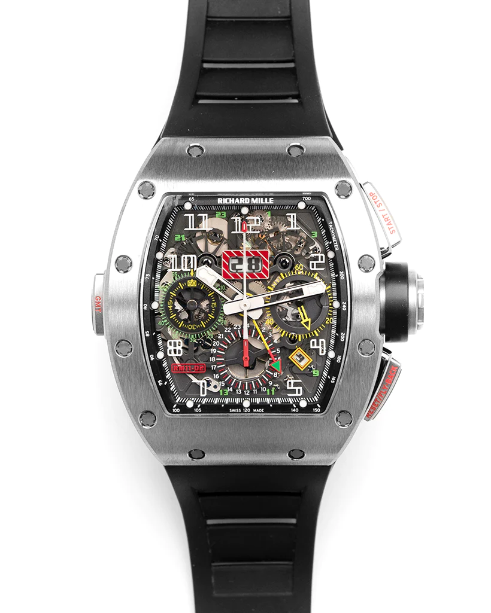
The dial is skeletonized and finished in Le Mans Classic colors
with three sub
dials, luminous tipped hands, a date and month window with an inner tachymeter
bezel. The RM11-03 is
powered by the self-winding RMAC3 caliber which has flyback chronograph
functionality, a 60-minute
countdown timer and oversized date display with a power reserve of up to 55
hours. The case is
paired with a
white rubber bracelet with a double fold over clasp. It has a water resistance
of 50 meters (165
feet). This beautiful RM can be yours cick the buy button and it can be yours it
is perfect for
anyone. Click the button to place your order now.
Price: 278,000$
Buy nowTAG HEUER FORMULA 1
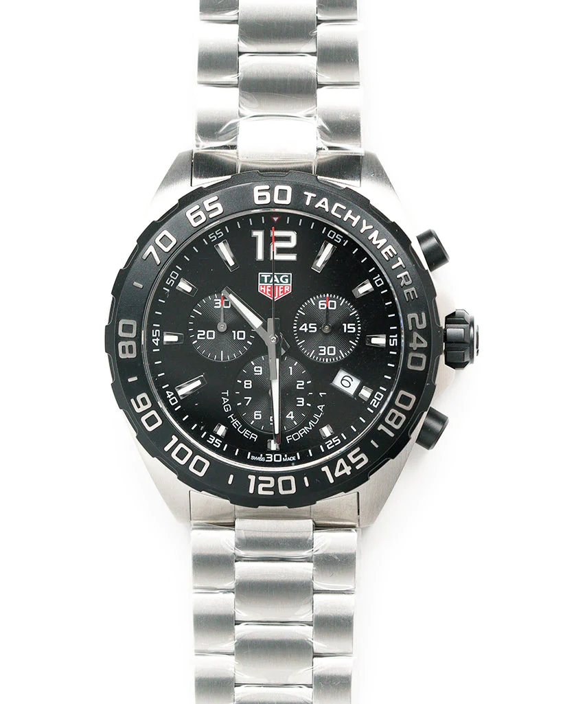
TAG Heuer Formula 1 Chronograph 43 Stainless Steel Black Dial Date
Divers Quartz Mens
Watch Model# CAZ1010.BA0842 is a sports watch for those unafraid to stand out
and take risks.
Entirely
built of the same highly resistant materials as those used in Formula One,
including black titanium
carbide coated steel for the bezel, highly resistant Sapphire crystal glass,
Super-LumiNova enhanced
dial details and cutting-edge design inspired by the top levels of motor-racing.
The 43mm case is
slightly tonneau-shaped and is water resistant to 200 meters/660 feet. This
beautiful TAG can be
yours cick the buy button. Browse our other dials for more if you have any
question contact us for
help.
Price: 1,450$
Buy nowAP OFFSHORE MUSIC
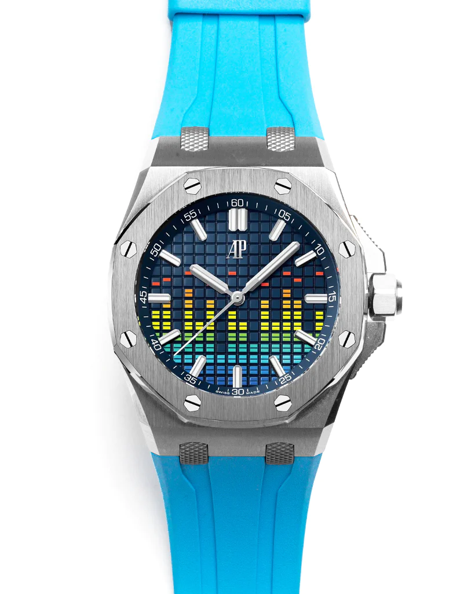
The Royal Oak Offshore collection has defied established
conventions since 1993,
giving an ever more powerful and sportier take on the Royal Oak and its
aesthetic codes. This piece
boasts a 43mm titanium Case, Blue interchangeable Rubber Strap, Sapphire
Crystal and comes with the self-winding Automatic movement.
The incredible piece is music inspired and features a dial which represents a VU
Meter and the push
piece guards evoking mixer faders. Blue dial with printed VU meter, white gold
applied hour-markers
and Royal Oak hands with luminescent coating. This beautiful AP can be yours
cick the buy button and
it can be yours it is perfect for
anyone. Browse our other dials for more.
Price: 67,000$
Buy nowSANTOS DE CARTIER
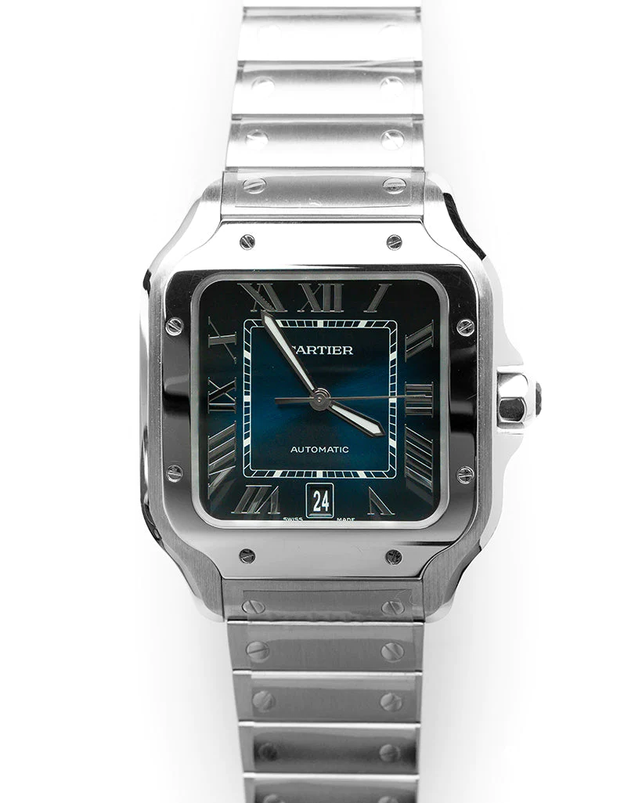
This Santos de Cartier watch, features a 40mm steel case and blue
roman numeral dial,
giving it the classic Cartier look. The mechanical self-winding movement and
7-sided crown is set
against the blue opaline dial, silver
roman numerals with steel sword-shaped hands. This model features Cartier's
patented QuickSwitch
bracelet system, as well as the SmartLink
bracelet adjustment feature, and comes with an additional blue leather strap and extra-large triple
folding steel buckle. This beautiful blue face dial will be amazing as an everyday piece or a dress
up piece. Use the link provided below to buy. This beautiful Cartier can be yours cick the buy
button and it can be yours.
Price: 7,000$
Buy nowROLEX GMT-Pepsi
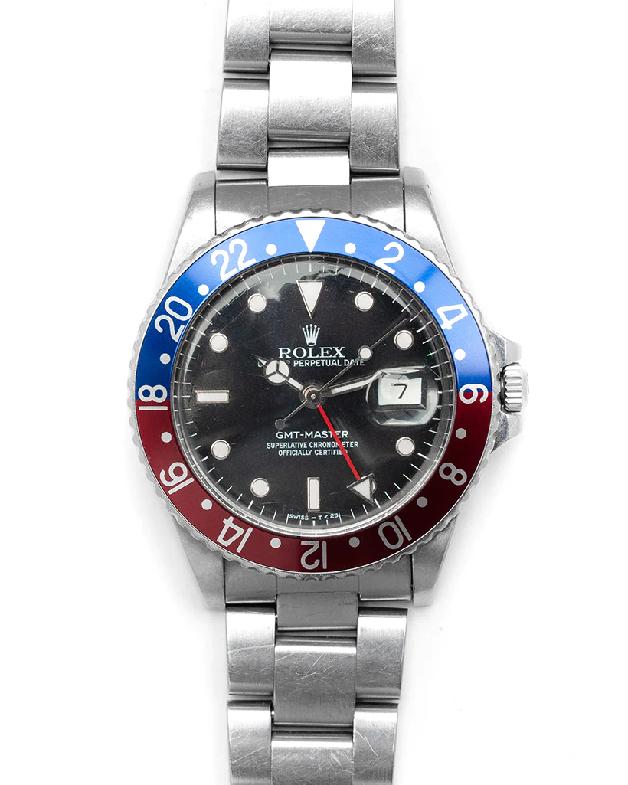
Presented in great condition this amazing example of the much
sought after Rolex GMT
Master 'Pepsi' in steel.This watch features a 40mm case, black dial and is
coupled to the with the
Oyster bracelet. Designed to show the time in two different time zones
simultaneously, the
GMT-Master, launched in 1955, was originally developed as a navigation instrument for professionals
criss-crossing the globe. Its combination of peerless functionality, robustness and
instantly recognizable aesthetics has attracted a wider audience of world travellers. Use the link
provided below to buy. This beautiful Pepsi can be yours cick the buy button and it can be yours it
is perfect for
anyone. Browse our other dials.
Price: 20,400$
Buy now